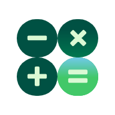
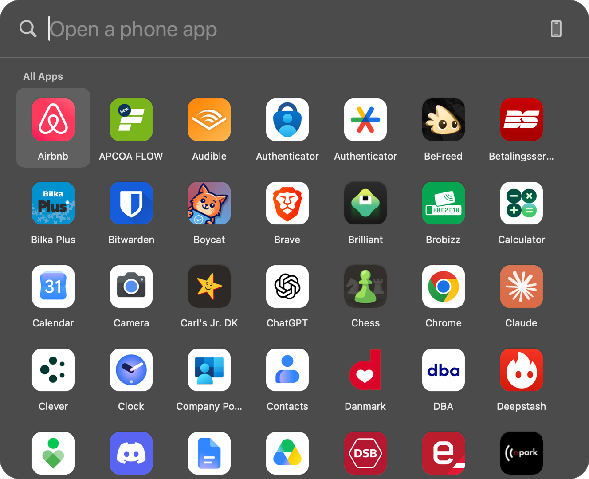
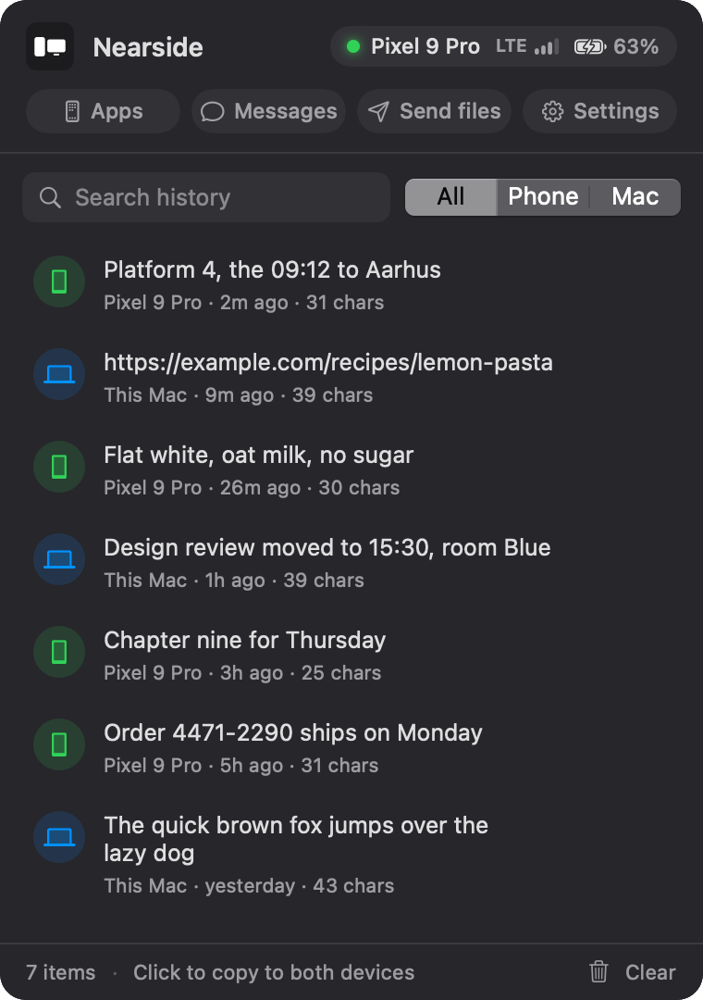
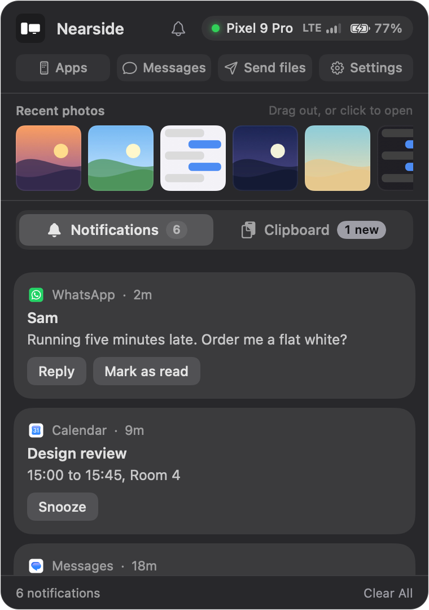

Continuity the way it was meant to be.
Use your Android phone from your Mac or Windows PC: apps in their own windows, one clipboard, notifications, texts and calls. The phone stays in your pocket.
Free and open source, no account. macOS 14+, Windows 11 (Arm), Android 11+. Setup


Everything you'd miss from an iPhone. Then some.
Continuity only works when both devices are Apple's. Nearside brings it to Android, and goes further.
- Every app, not one screen
- Each phone app in its own window, as many as you like.
- A clipboard with a memory
- Copy here, paste there, with a searchable history.
- Mac or Windows, or both
- The same on both, and one click moves the phone between them.
- The phone you want
- Any phone on Android 11 or later.
- Tablet size on demand
- Run an app at tablet size, even from a regular phone.
- Open and private
- Open source. No account, no cloud.
Every phone app, in its own window.
Real windows: the Dock and ⌘-Tab on a Mac, the taskbar and Alt+Tab on a PC. Close one and the app is back on your phone.
- Native input: trackpad, mouse and your own keyboard.
- Phone, foldable or tablet size, laid out by Android.
- Sound on your computer, per window.
- A second phone with its own home screen.


All your apps, one shortcut away
⌥⌘P on a Mac, Ctrl+Alt+N on a PC. Type a name and it opens.
The everyday things, without your phone.

One clipboard
Copy on one, paste on the other, with a searchable history. Password-manager entries are never kept.

Notifications you can act on
Real macOS or Windows notifications, with replies and buttons. Dismiss on one, gone on both.
- Calls
- Answer and talk through your computer.
- Webcam
- Your phone's camera in FaceTime, Teams or Zoom.
- Photos
- The newest ones in the panel. Drag one out.
- Texts
- Read and send SMS from your computer.
- Files
- Drop them either way.
- Wi-Fi or USB
- Plug in and it moves to the cable.
Between your two devices, and nowhere else.
A small helper on your phone, started over wireless debugging like scrcpy. No root, no server.

Pinned to your phone. Only your paired phone is accepted.
Proven both ways. Each side checks the other first.
Touch ID or Windows Hello before phone apps show.
Where it's tested.
Daily on a Pixel 9 Pro (Android 17 beta) with a MacBook Air and a Windows 11 PC. Other phones aren't tested yet.
- ClipboardTested
- Notifications and textsTested
- Phone apps in windows, with soundTested
- Calls through the computerTested
- Photos and filesTested
- WebcamTested
- Wi-Fi and USBTested
- Mac and WindowsTested
Tried another phone? Send a device report, working or not. All phones so far
Get Nearside.
Three steps, about five minutes.
-
Download
Mac: open the zip, drag Nearside to Applications. Windows (Arm): run the installer.
-
Open it
It shows a QR code. Windows may warn, as the installer isn't signed yet: More info, then Run anyway.
-
Scan it
On the phone: Developer options → Wireless debugging → Pair device with QR code. No Developer options? Tap Build number seven times in About phone.
Updates install themselves. All versions
Keep it free and getting better.
No ads, no accounts, no paid tier. Help keep it going.